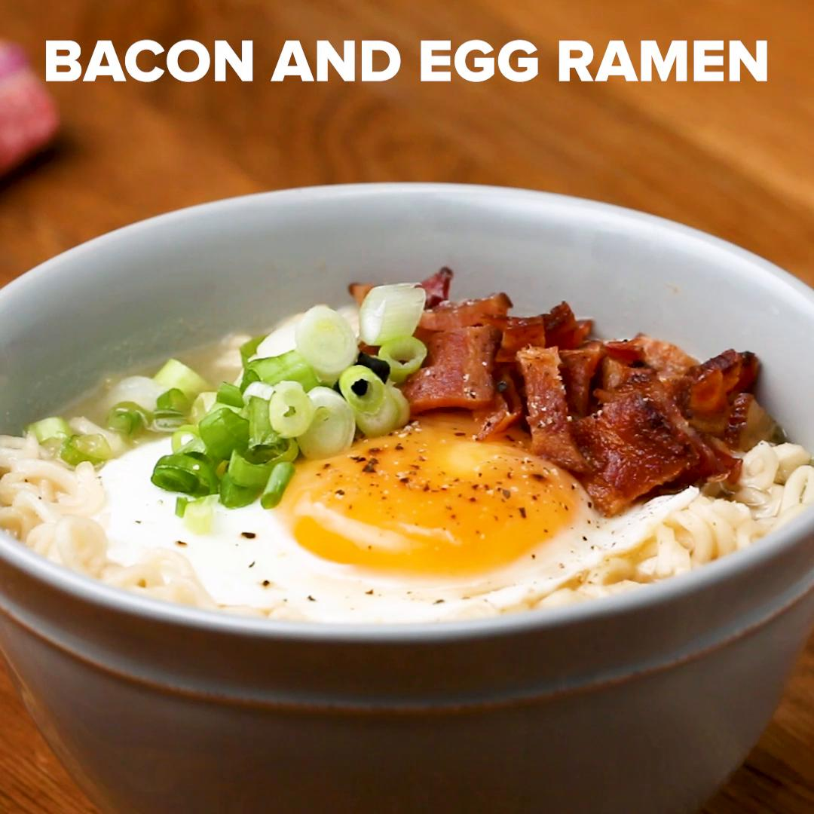

Bacon and Egg Ramen
This easy healthy Ramen will make your whole family smile!
Ingredients
- 1 package instant ramen, prepared
- 1 egg, fried
- 3 slices bacon, cooked and chopped
- 1 tablespoon scallions, thinly sliced
- kosher salt, to taste
- black pepper, to taste
Instructions
- To a pot with 2 cups (480 ml) of boiling
water add the ramen seasoning packet and a
tablespoon of butter. Stir until the butter
melts and then add the ramen noodle cube and cook until the noodles
become tender, 2 minutes. Pour the ramen into a bowl.
- Top the prepared ramen with the fried egg, bacon, and scallions and season with salt and pepper.
- Enjoy!
Main Page